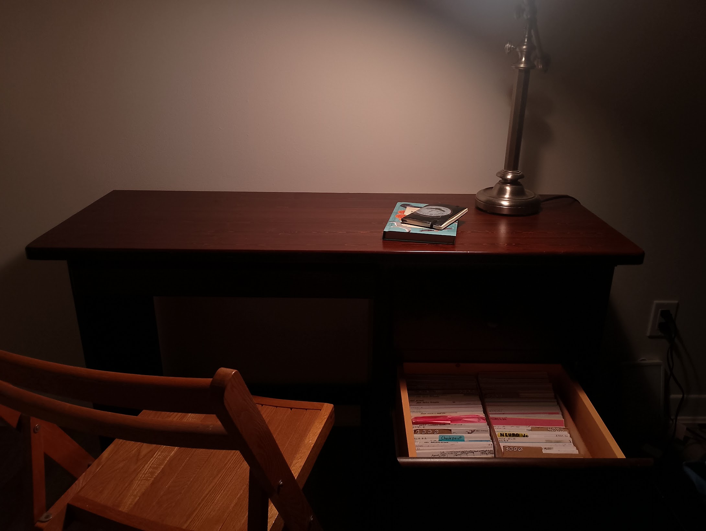

Hello! 👋
Here's a quick update regarding what I've been up to recently!
🦑 Pivot to Biology
For many years, most of my public work has revolved around programming and technology. I initially enrolled in the Cognitive Science program at Carleton to study neuroscience and work on bio-inspired artificial intelligence systems. But behind the scenes, I've always had a fondness for nature and wilderness. Some of my old videos make reference to this interest.
I've decided to transfer to the biotechnology program at Carleton University, which presented a few challenges because I graduated from highschool without taking any of the science classes. Over the last few months I've been taking online highschool credits, and now have enough of my pre-requesites to enroll in the university level classes.
Despite all of the schoolwork, I have managed to complete a few small independent bio projects.
-
I grew a slime mold in my dorm room

-
I joined iNaturalist and started identifying plants & mushrooms

-
I went on a hiking trip at Algonquin Park

-
I found micro-organisms in local pond-water (done during a biology lab at university)

🏠 Moving Out
Last year I lived in the university dorms. I moved back to my parent's house over the summer, and I have just now moved out again into a house with a couple of my friends. The house is unfurnished, so we're spending a lot of time on facebook marketplace and kijiji finding second hand furniture to gradually decorate our living space.
We've just managed to get our dining table today!
So far my favourite furniture item I've found is this vintage desk, which has drawers just big enough to fit two of my Zettelkasten boxes inside.

🌐 Findings About Personal Websites
In January I started working on a search engine for personal websites. Many months have gone by without any dedicated work on the engine, but I have been working on a tangential project.
I've assembled a dataset of approximately 2000 websites, and extracted specific features about each one. Such as: the number of images used on the website, the number of external links, the number of pages, how long the sentences are, use of personal pronouns, etc... Crucially, every single website is labelled as either a personal website or a commercial website.
Next, I fit a logistic regression model to determine which features are strong in personal websites vs commercial websites. These are my results.

All the features are statistically significant (based on the z score), except for median sentence length. I've drafted up an article about these results, but I still ned to edit it and give it a little more substance
🫵 Participate in Research
My friend Liam Cohen is conducting a study about the experience of neurodivergent graduate STEM students who did not complete their graduate studies, and they are currently looking for participants! I think the work Liam is doing is crucial, and has great potential to better the experiences of many people.
Given the nature of my audience, I think there may be a few people here who might fit the bill, or at least know someone who does. The results of this study aim to improve the experience of future neurodivergent graduate STEM students.
If you fit this description and would like to participate (or know someone who does), just reply to this email and I'll do two things:
- Send you a few more details about the study
- Put you in touch with Liam

Those are my highlights of this month.
I'll be back in your inbox eventually.
Thanks for reading 👋
Nicolas Gatien